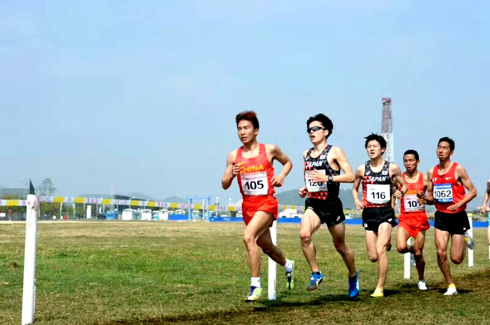
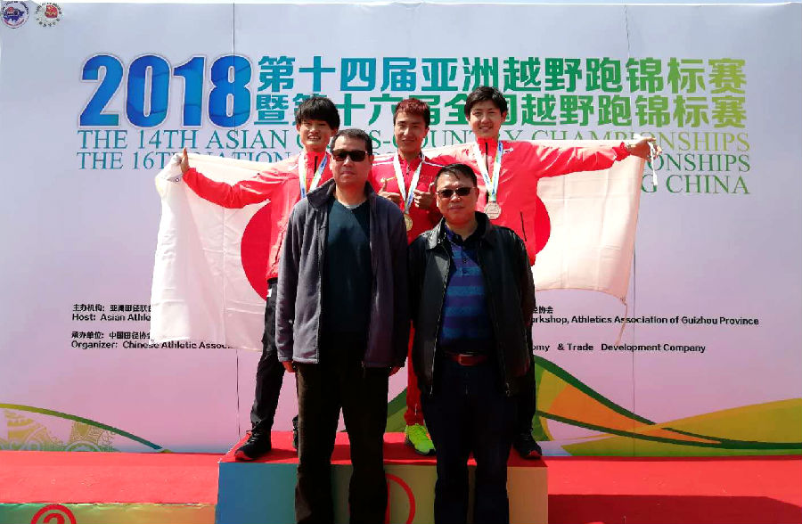

我校学子夺得第十四届亚洲越野跑锦标赛冠军
作者：张自永 来源：体育学院 发表时间：2018-03-20 20:39:45 浏览量：1157
3月15日至16日，第十四届亚洲越野跑锦标赛在贵州举行，我校2017级运动训练专业彭建华同学代表中国队参赛，以38分22秒的成绩夺得男子成年组12公里越野项目冠军。

105号选手彭建华力压群雄

彭建华夺得男子成年组12公里赛冠军
据悉，本届亚洲越野跑锦标赛由亚田联主办，是亚洲范围的高规格越野跑比赛。本次彭建华的竞赛成绩是中国队历年来在该赛事取得的最好成绩。